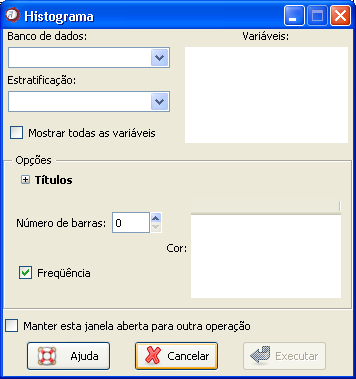

Histograma
Histograma
Pode ser utilizado também quando se tem a distribuição de freqüências dos dados e se deseja plotar graficamente essa distribuição. Representado por barras, que são denominadas classes de freqüência, o histograma pode ter intervalos iguais ou diferentes.
Esse tipo de gráfico permite interpretações tanto em função da distribuição absoluta como da distribuição relativa da variável.
O caminho para essa função é: Gráficos

Figura 1. Janela "Histograma".
Figura 1. Janela "Histograma".
O primeiro passo é selecionar o banco de dados onde está a variável de interesse. Para isso, é necessário que o banco já tenha sido aberto (detalhes sobre como abrir dados ou importar dados via ODBC).
Em seguida, todas as variáveis aparecerão disponíveis no campo "Variáveis". Uma ou mais variáveis deverão ser selecionadas. Deve-se lembrar que só é possível construir hitogramas para variáveis numéricas.
Um item opcional da janela é a variável de estratificação. Quando o banco de dados é selecionado, as variáveis identificadas como fatores aparecerão na guia "Estratificação". Se a variável de estratificação não estiver listada nesse campo, basta habilitar a opção "Mostrar todas as variáveis". É permitida a escolha de apenas uma variável para esse caso.
Os campos seguintes são opcionais. As informações sobre cada campo seguem abaixo:
Opções de títulos
As opções de "Título", "Subtítulo", "Rótulo X" e "Rótulo Y" não aparecem na janela automaticamente. Para preenche-las, clique primeiro em Títulos.
Os nomes dos rótulos devem se referir à variável selecionada e ao tipo de frequência utilizada na gráfico.
Opções de gráfico
Número de barras: É o número de classes de frequência do histograma. O valor padrão aparece como zero, mas na realidade, as classes são automaticamente calculadas utilizando a fórmula de sturges. Se desejar definir outras classes, basta escrever o número nesse campo. Deve-se lembrar que no Epi-R, as classes são divididas igualmente.
Cor: Indica a cor do gráfico, em código RGB. Para alterar a cor de um gráfico, não é necessário saber o código da cor. Basta dar um duplo clique no campo e uma janela será aberta com a aquarela. Nessa janela, selecione a cor desejada e clique em ok.
Frequência: Como visto, o histograma pode ser apresentado com valores absolutos ou relativos. O padrão é a apresentação com a frequência absoluta. Se desejar utilizar a frequência relativa, basta desmarcar a caixa de diálogo desse campo.
Depois de selecionar todas as opções desejadas, basta clicar em "Executar". Para construir sucessivos gráficos usando essa janela, marque a opção "Manter essa janela aberta para outra operação". Com isso, o resultado desejado aparecerá na janela de gráficos do Epi-R, mas a janela atual não será fechada, evitando o retrabalho de acessá-la.